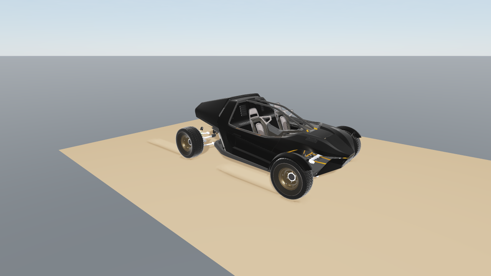
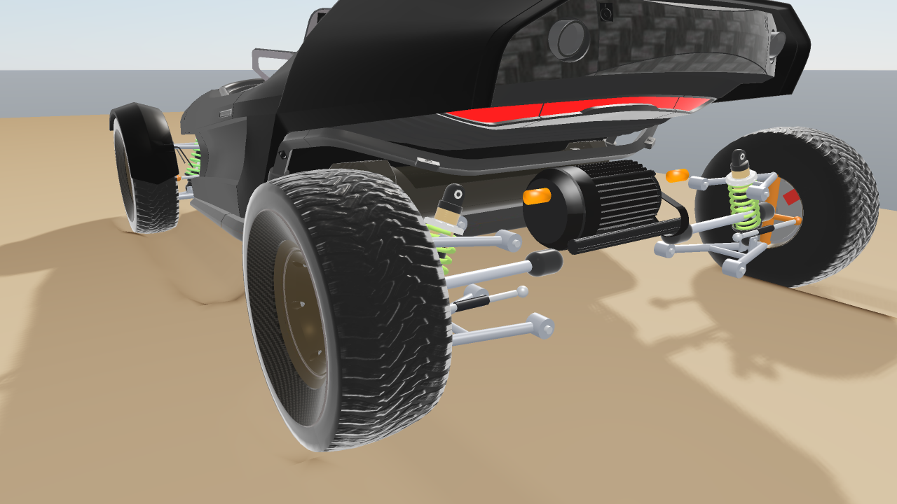
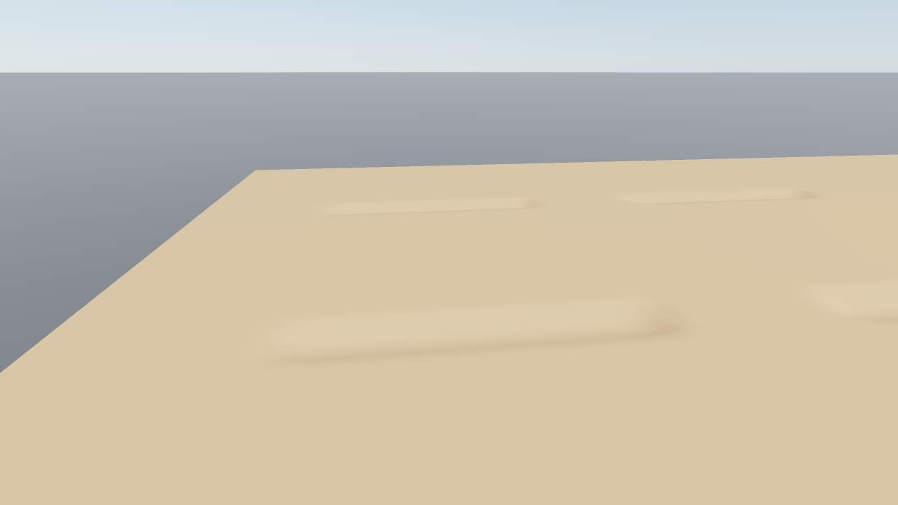
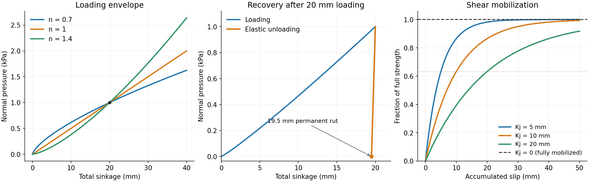
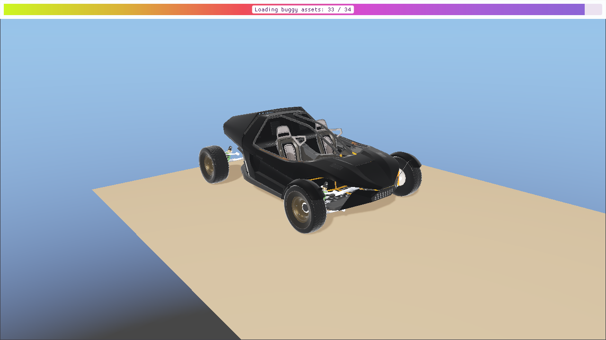

Deformable terrain
World::addDeformableTerrain creates a soil bed that deforms under rigid
bodies and articulated systems. Distributed normal pressure supports their
weight, while shear resistance provides traction. The model describes
pressure-dependent sinkage, elastic recovery, permanent ruts, and traction
buildup with slip.


The example’s 896 kg buggy driving across the bed. Rear-wheel drive supplies torque through the wheel joints; soil traction moves the chassis and the wheels leave ruts in the surface.
Car visuals are based on
Sci - Fi Buggy
by TiyaMakes, licensed under
CC BY 4.0. The meshes
and textures are modified; the buggy asset credits
describe the changes and redistribution requirements.


The buggy’s double-wishbone suspension distributes the vehicle load between the wheels. Springs and dampers respond as the wheels sink into the soil.


The same bed after removing the car. Elastic displacement recovers and permanent ruts remain; surface heights are shown without vertical exaggeration.
Creating a bed
raisim::DeformableTerrain::Material soil;
soil.bekkerKc = 0.0;
soil.bekkerKphi = 4.0e4;
soil.sinkageExponent = 1.1;
soil.elasticStiffness = 2.0e6;
soil.damping = 2000.0;
soil.cohesion = 100.0;
soil.frictionCoefficient = 0.6;
soil.shearDisplacement = 0.01;
const size_t nx = 201, ny = 101;
auto* bed = world.addDeformableTerrain(
nx, ny, 8.0, 4.0, 0.0, 0.0, std::vector<double>(nx * ny, 0.0), soil);
bed->setName("soil");
Heights use height[y * nx + x]. The bed covers the same local coordinate
range as Height Map. You may place the bed with setPosition and setOrientation between steps. Deformation
and normal pressure act along the bed’s local Z axis. The bed is static;
dynamic and kinematic body types are rejected.
The default values are illustrative parameters, not a calibrated material. Choose the mesh spacing to resolve the footprint and the desired rut width; 2–5 cm is a useful starting point for robot feet and wheels of comparable size. Finer spacing represents curved footprints and rut boundaries in more detail.
Constitutive model
For total downward displacement \(s\), permanent displacement \(s_p\), and projected contact width \(b\), the normal pressure is
The effective width \(b\) is the narrowest width of the collider’s footprint projected onto the bed plane: the shorter side of a flat box, the tread width of a wheel whose axle lies in the bed plane, and the diameter of a sphere or capsule. Mesh colliders use the footprint of their bounding box. The width turns with the collider, so a body’s heading does not change its soil stiffness. This approximates contact width for general shapes; calibrate the width-dependent term for the intended wheel or foot geometry.
The elastic branch \(K_e(s-s_p)\) describes recoverable deformation, while the Bekker envelope \((k_c/b+k_\phi)s^n\) limits the pressure before further permanent compaction. Permanent sinkage never decreases: after loading, \(s_p\) retains at least \(s-p/K_e\). Removing the load recovers the elastic displacement and leaves a rut of depth \(s_p\).
Penetration adds loading-only viscosity:
Here \(\dot{s}\) is the rate at which the body pushes the soil surface down. A body above the surface, or above the floor of an existing rut, meets no resistance until it reaches it; only its travel into the soil is damped. The normal response is compressive; the soil supplies no suction when the body lifts away. Impact loading can produce deeper ruts than slow loading at the same final weight.
Shear strength follows Mohr–Coulomb and Janosi–Hanamoto:
Here \(j\) is accumulated tangential slip while the surface is loaded.
Shear resistance opposes slip, with the same strength limit in every tangent
direction. shearDisplacement = 0 selects fully mobilized friction immediately.
The normal pressure \(p_n\) includes loading viscosity, while \(p\)
denotes the non-viscous elastic/plastic part.
Material parameters
DeformableTerrain::Material defines the soil response for the entire bed.
These parameters use SI units: metres, seconds, and pascals (N/m2).
They describe pressure and shear stress per unit area. Total contact forces
are the corresponding stresses integrated over the loaded footprint. The
parameters describe the material and do not need rescaling with mesh spacing
or timestep.
C++ member |
Units |
Default |
Valid values |
|---|---|---|---|
|
\(\mathrm{Pa}\,\mathrm{m}^{1-n}\) |
|
Finite, nonnegative |
|
\(\mathrm{Pa}/\mathrm{m}^{n}\) |
|
Finite, nonnegative |
|
Dimensionless |
|
Finite, strictly positive |
|
Pa/m |
|
Finite, strictly positive |
|
Pa s/m |
|
Finite, nonnegative; zero disables viscosity |
|
Pa |
|
Finite, nonnegative |
|
Dimensionless |
|
Finite, nonnegative |
|
m |
|
Finite, nonnegative; zero gives full mobilization |
At least one of bekkerKc and bekkerKphi must be positive. Invalid
materials throw std::invalid_argument at construction. The API imposes no
upper bound on finite coefficients; acceptance does not establish that a
value represents a particular soil. The defaults and the softer example bed
above are illustrative rather than measured material presets.
Normal loading: bekkerKc, bekkerKphi and sinkageExponent
The Bekker loading envelope is \(p_y=(k_c/b+k_\phi)s^n\).
Increasing either coefficient at a fixed exponent and footprint raises the
pressure at a given sinkage and reduces the equilibrium sinkage under the
same load, provided the elastic branch is not the limiting response.
bekkerKc supplies the width dependence: its contribution increases as
\(b\) decreases. bekkerKphi supplies the width-independent contribution.
Setting bekkerKc = 0 removes this explicit width dependence, although the
footprint’s area still affects force and its shape affects the pressure distribution.
Despite its name, bekkerKc is a normal pressure coefficient; it is distinct
from the tangential cohesion parameter.
For a flat plate with uniform pressure \(p_{\mathrm{load}}=mg/A\) resting on the yielding envelope, a useful analytical check is
For example, a 20 kg, 0.4 by 0.6 m plate has \(A=0.24\) m2, \(b=0.4\) m, and \(p_{\mathrm{load}}=817.5\) Pa at \(g=9.81\) m/s2. With \(k_c=0\), \(k_\phi=10^5\), and \(n=1\), the yielding-envelope sinkage is 8.175 mm. This is a quasistatic reference for a uniform plate, not a prediction of transient impact depth or of loading into an existing uneven rut. The elastic branch and accumulated plastic state can determine the response instead.
sinkageExponent controls the curvature of the loading envelope. Its
incremental stiffness is \(n(k_c/b+k_\phi)s^{n-1}\). With \(n=1\),
pressure is linear in sinkage. With \(n>1\), the incremental stiffness
increases with sinkage; with \(0<n<1\), it decreases. Changing \(n\)
also changes the units of both Bekker coefficients. Comparing materials by
changing only \(n\) while retaining the same numerical coefficients is
therefore misleading. To hold a reference pressure fixed with \(k_c=0\),
choose \(k_\phi=p_{\mathrm{ref}}/s_{\mathrm{ref}}^n\) for each exponent.
Elastic recovery: elasticStiffness
elasticStiffness is the pressure slope during elastic unloading and
reloading: \(p_e=K_e(s-s_p)\). It is a foundation stiffness per area,
not a Young’s modulus in Pa or a spring constant in N/m. A uniform area
\(A\) has elastic force stiffness \(A K_e\) in N/m. At pressure
\(p\), the recoverable displacement on this branch is \(p/K_e\).
For example, 1000 Pa with \(K_e=2\times10^6\) Pa/m gives 0.5 mm of recoverable sinkage. Increasing \(K_e\) reduces this recovery and steepens the unloading/reloading slope. It does not raise the Bekker yield envelope: normal pressure remains the smaller of the elastic and yielding pressures. At a fixed peak sinkage on the envelope, a larger \(K_e\) leaves a larger permanent fraction through \(s_p=s-p_y/K_e\). If the elastic stiffness is too low relative to the desired loading envelope, the response can remain mostly elastic and produce much less permanent rutting. Fit this parameter from unloading/reloading data rather than treating it as a general hardness control. Completely unloaded soil recovers to its permanent depth; the model has no independent delayed relaxation.
Loading rate: damping
damping adds pressure \(p_v=D\max(\dot{s},0)\) during penetration.
For example, \(D=2000\) Pa s/m and a loading speed of 0.1 m/s add
200 Pa. Increasing it raises transient resistance and dissipation during
loading; it does not alter the equilibrium pressure when the loading speed
is zero. It supplies no viscous suction or tensile force during unloading.
Zero removes the viscous term while retaining the elastic/plastic response.
The total normal pressure \(p_n=p+p_v\) also enters the frictional strength, so increasing damping can raise transient shear resistance as well as normal resistance. Calibrate rate effects separately from the Bekker envelope and check the intended impact speeds. This local viscosity does not represent soil mass, wave propagation, or a volumetric viscoelastic continuum.
Shear strength: cohesion and frictionCoefficient
The fully mobilized shear stress is \(\tau_f=c+\mu p_n\).
cohesion sets its pressure-independent intercept. For example,
\(c=100\) Pa contributes 10 N over a loaded 0.1 m2 patch when
fully mobilized. frictionCoefficient sets the pressure-dependent slope;
\(\mu=\tan\phi\) if expressing it as a friction angle \(\phi\).
At \(p_n=1000\) Pa, \(c=100\) Pa and \(\mu=0.6\), the fully
mobilized stress is 700 Pa. The displacement law below can reduce the
available stress before mobilization.
Increasing either parameter raises available traction at the same normal
pressure and shear history. With frictionCoefficient = 0, nonzero
cohesion can still resist slip while contact is loaded. Setting both to
zero removes tangential resistance. Cohesion does not bond a body to the
surface or create a tensile normal force when it lifts away.
These soil parameters govern the distributed terrain contact law. The rigid
material-pair friction and restitution settings in Material System do
not tune this constitutive response. Use the soil’s Material for its
traction and loading response, and material pairs for ordinary rigid contacts.
Traction buildup: shearDisplacement
shearDisplacement is the Janosi–Hanamoto displacement scale \(K_j\):
For positive \(K_j\), the strength reaches approximately 63.2% at \(j=K_j\), 95% at \(j=3K_j\), and 99% at \(j=4.605K_j\). With the default 0.01 m scale, those displacements are 10, 30, and 46.05 mm. A smaller scale builds traction over less slip; a larger scale produces slower buildup and more creep before reaching the same strength. Setting zero selects fully mobilized friction immediately, including any cohesion.
The history is accumulated slip displacement at a loaded soil patch, not elapsed time, commanded wheel travel, or body displacement in free flight. It grows while a patch is loaded and resets when that patch unloads. Permanent sinkage survives unloading separately. A new footprint therefore does not inherit the shear history of an unloaded rut. Fit \(K_j\) as a physical slip displacement scale, independently of the terrain mesh spacing.


Constitutive curves for the dynamics model. The loading curves share 1000 Pa at 20 mm; the recovery example unloads with \(K_e=2\times10^6\) Pa/m. The shear plot shows different displacement scales and the fully mobilized zero-scale case. These are illustrative responses rather than measured soil data.
Calibrating a material
Measure slow plate-loading curves at several widths and loads. Fit \(n\) and the two Bekker coefficients together. At a fixed \(n\), plotting \(p/s^n\) against \(1/b\) gives slope \(k_c\) and intercept \(k_\phi\). A single width identifies only their sum \(k_c/b+k_\phi\); it cannot identify both coefficients separately. Use the same projected-width convention as the colliders being simulated.
Measure unloading/reloading slopes to fit \(K_e\), including recovered depth and the remaining rut. Fit the loading envelope and elastic branch consistently; the normal pressure is their minimum.
Repeat indentation at different speeds to fit \(D\) from the extra loading pressure, after accounting for quasistatic pressure. Recheck impact compaction rather than fitting only the final resting depth.
Measure shear stress versus displacement at several normal pressures. Fit \(c\) and \(\mu\) to the fully mobilized stresses, then fit \(K_j\) to the buildup curves. Include low-speed slip if creep matters.
Validate with the intended feet or wheels, loads, speeds, mesh spacing and timestep, including unloading and repeated passes. Compare sinkage, recovered depth, force and traction histories as well as final poses. Agreement with an analytical plate case alone does not establish accuracy for a particular soil or for phenomena outside the supported model.
Terrain state and saving
getSoilState() returns three arrays with one value per vertex:
sinkage, plasticSinkage, and shear. They represent total downward
displacement, permanent downward displacement, and accumulated loaded slip,
respectively. setSoilState restores these arrays. resetSoil
returns to the undeformed mesh. Call state setters between complete steps.
HeightMap height-edit APIs are rejected for this subclass because they bypass
soil history. getUndeformedHeights returns the original surface.
getSoilStepStats() describes the last step. contacts counts the
quadrature contacts near bodies, including those a body approaches but has
not yet loaded. contactArea and normalForce are the area and total
normal force of the loaded contacts. A soil contact’s getDepth() is its
separation from the floor of the current rut: positive while the body
approaches, negative while it compresses the soil.
World checkpoints capture the soil history and support deterministic replay.
XML export saves original heights and the complete state. To author a soil
bed in a world XML file, use explicit height samples and a soil child:
<heightmap name="soil" x_size="2" y_size="2" x_sample="3" y_sample="3"
height="0 0 0 0 0 0 0 0 0">
<soil bekker_kc="0" bekker_kphi="40000" sinkage_exponent="1.1"
elastic_stiffness="2000000" damping="2000" cohesion="100"
friction_coefficient="0.6" shear_displacement="0.01"/>
</heightmap>
Soil XML currently requires height; generate or load a height array in C++
when starting from PNG, text, or procedural terrain. Exported soil elements
also contain sinkage, plastic_sinkage, and shear arrays.
For terrain-only contacts on articulated systems, the solver packs the fixed impulse-response matrices once per physics step and uses vectorized updates of the generalized velocities. When a second sweep is needed, it packs padded Jacobian columns once so all three contact-velocity components can use vector instructions, while retaining each component’s original summation order. The responses include the suspension’s eliminated pin and equality constraints. Contact order, quadrature samples, material equations, and convergence tolerances remain the same.
When an articulated terrain solve needs more than four sweeps, sufficiently large contact groups can use six-component velocity and force/torque coordinates for each contacting link. Setup is attempted only when the residual after four sweeps still exceeds 1,000 times the existing stopping threshold, so solves near convergence retain the cheaper full-coordinate updates. Each quadrature point still receives its own normal and shear solve, with its original apparent inertia, material history, and residual tolerances. While consecutive points on one link are visited, changes to other links accumulate as force and torque. Their coupled velocity is updated before the next contact on another link is read. The Gauss-Seidel contact order and stopping criteria are retained; contacts are never merged.
The six-direction basis is rebuilt from well-separated points in the current step. Every original sparse Jacobian and every full generalized impulse response must pass reconstruction checks at double-precision roundoff before this path is enabled. The responses include eliminated pin and equality constraints. Small groups and poorly conditioned geometry continue through the full articulated update. At the end of the solve, the original point responses update all generalized velocities, including passive joints absent from the contact Jacobians. This reduction can change floating-point summation order; it changes neither the mesh resolution, timestep, constitutive equations, nor solver accuracy settings.
The solver also seeds mesh-soil contacts with the last converged traction on the same bed and body link. The cache sorts contact positions by X to limit nearest-point searches to the contact matching radius. It keeps them apart from the same body’s rigid contacts, so the search cost stays linear when a body rests on soil and on a rigid support at once. Quadrature points are matched one to one; the cached traction is scaled by the current contact area and timestep and projected into the current soil strength bound. Impacts, unmatched points, and stale or non-converged cache entries receive a cold start. Current soil history and material forces are still solved each step at the existing convergence tolerances. Normal and shear updates continue iterating until their coupled force converges, including an isolated contact.
Warm starting changes the numerical iteration path, so a cold-start trajectory
need not be bit-for-bit identical. Set
world.getContactSolver().getConfig().terrainWarmStart = false to disable
cached traction guesses while keeping the same mesh, timestep, material equations,
and tolerances. World checkpoints include this configuration and cache for
deterministic replay.
Within each coupled solve, shear updates also reuse the previous scalar root as an initial guess inside the current analytic bracket, in both compliance and shift coordinates. The current slip, normal load, and shear strength are evaluated again before a root is accepted, using the same constitutive residual tolerance. A valid seed avoids evaluating unused bracket endpoints; the solver verifies a feasible endpoint if its safeguarded iterations exhaust their limit. It retains the impulse already evaluated at the accepted root. These guesses reset at the start of each physics step.
The scalar shear roots use Newton for small corrections and safeguarded Halley updates for larger corrections, including the curvature of the displacement-dependent shear strength. This reduces repeated constitutive evaluations without changing the force equations. An update is accepted only after re-evaluating the current residual on the feasible side of the original tolerance. Poorly scaled curvature uses Newton, and proposals outside the current bracket use bisection. The fixed tangential matrix from that residual evaluation is reused in the derivative calculations.
Normal warm seeds also reuse the reciprocals of the fixed elastic loading and unloading slopes. These are separate because loading includes the material’s viscous term. Yield branches retain their nonlinear slope calculation. Each nonzero warm residual still receives a correction before acceptance, and the updated pressure and depth must pass the same normal residual tolerance. For nonlinear warm seeds, a conservative tangent below the convex Bekker pressure envelope can certify an interval where the elastic branch wins. The interval is constructed only when an elastic warm seed needs it, and a new ordinary pressure anchor invalidates it. Inside that interval, one exact elastic correction replaces the general Newton loop when loading or unloading does not change. The updated pressure is still checked against the original normal residual tolerance. An envelope crossing, a viscous loading transition, an unsupported exponent, or a poorly scaled interval retains the safeguarded solve.
When the sinkage exponent is one, both pressure branches are affine. The solver computes the four elastic/yield and loading/unloading depth candidates from coefficients fixed for the current physics step. Taking the minimum of each branch’s loading/unloading candidates and then the maximum of the two pressure candidates solves the same piecewise pressure equation directly. It evaluates the current pressure and residual before acceptance; poorly scaled coefficients and candidates that fail the existing tolerance use the iterative solve.
Warm shear visits can also use a fixed compliance cap from the tangential mobility matrix. A conservative bound using the current normal load, shear history, and tangential velocity components proves the cap feasible before it replaces the more expensive analytic bracket calculation. If that proof fails, the original analytic bracket is calculated. Both paths evaluate the current slip-dependent force at the same tolerance.
All of these scalar caches reset each physics step.
For bodies with many terrain quadrature points, dense pin elimination projects six spatial impulse directions once per body. Each point’s response and pin coupling are recovered from those directions and its lever arm. This uses the linearity of the current mass-weighted projection; it retains every contact point and recomputes the mass response and constraint factorization each step. Smaller constraint or contact groups, tracked bodies, and the structured pin factorization use the existing per-contact projection.
The deformable_terrain benchmark accepts --body=articulated to measure
a 60-DOF plate with the same analytical load and sinkage checks as its default
rigid plate. --body=pinned adds eight independent joint relations to
exercise the shared suspension projection with the same analytical load.
--body=multilink uses a 64-DOF body supported by four separate articulated
pads with horizontal sliders, retaining the same total 20 kg load and
0.24 square metre footprint. This exercises coupling between contacting links
and checks sinkage against the same analytical pressure law.
Compare --start=warm (default) and --start=cold to measure
warm starting at the same accuracy settings; each case reports solver sweeps
and analytical sinkage error. Use one CPU thread for timing comparisons.
Add --contact-law to time the normal and shear updates independently of
collision detection and articulated-body calculations. This workload visits
32 anisotropic point contacts with changing loads and slip speeds, covering
fresh, partially mobilized, and fully mobilized shear histories. It verifies
normal pressure, shear feasibility, tangential alignment, and dissipation after
each timed run. For example:
./benchmarks --bench deformable_terrain --raisim -- --contact-law --start=warm --steps=10000 --repeats=3
Use --start=cold for the same inputs with fresh scalar solve state at every
visit. Add --material=linear to isolate the piecewise affine pressure solve;
the default is --material=nonlinear with exponent 1.1. Both material options
retain displacement-dependent shear and the same force checks. This microbenchmark complements the full mesh and vehicle workloads;
its timing does not include mesh updates, collision queries, or suspension
constraints.
Model scope
This is a surface terramechanics model for a supported bed. The surface deforms only along the bed’s local Z axis. It represents distributed support, permanent compaction, elastic recovery, loading viscosity, and slip-dependent traction for rigid bodies and articulated systems.
The model does not include soil inertia, lateral soil transport, displaced-volume berms, excavation, overhangs, or failure planes. It is not a volumetric continuum model.
The soil has no contact model for granular media or deformable objects
(cloth and volumes), so a world cannot hold a deformable terrain together with
either. Adding the second of them is a fatal error (RSFATAL), whichever is
added first and also while a world XML file loads, so the combination fails
before any simulation step.
Vehicle example
The rayrai_deformable_terrain example drives an 896 kg off-road buggy over
a 16 m by 6 m soil bed. It uses the same vehicle model as
Rayrai Example: Off-Road Buggy: double-wishbone suspension,
coil springs and dampers, rack-and-pinion steering, and tyre compliance.
The cylindrical wheel colliders have radius 0.3611 m and contact widths
of 0.126 m in front and 0.1562 m at the rear.
While meshes load, the example shows the same loading bar as the forest example. Its gradient and deep-purple label use the colors from the RaiSim logo. Physics stays paused until the assets are ready, then driving starts without a settling phase.


The shared loading bar stays above the viewer while the simulation clock remains at zero.
The bed uses bekkerKphi = 2.0e6, elasticStiffness = 2.0e7,
damping = 4.0e4, sinkageExponent = 1.1, and cohesion = 100.
Other material fields retain their defaults. These parameters demonstrate
wheel sinkage, permanent ruts, and traction; they are not measurements of a
particular soil. Rear-wheel drive requests about 0.8 m/s, with the actual speed
determined by sinkage, slip, and soil resistance.